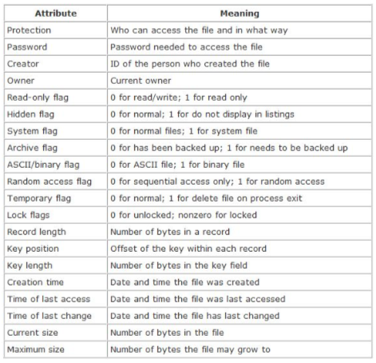

abstract storage 'devices' organised in (typically hierarchical) file system structure
file access:
file types:
regular files, dirs, soft links
special files (e.g. device files, metadata files)
file structure:
OS' perspective: files as streams of bytes
program's perspective: archives, executables, etc.
is OS ever aware of the file structure?
file naming:
file attributes:

file operations:
directories: